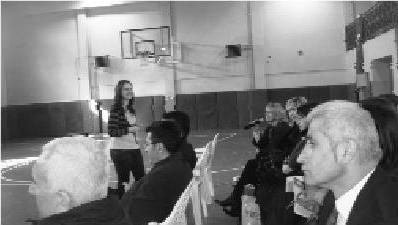

Hayat amacımız, bireyden topluma gelişim; söylenmektense söylemek hayata dair güzellikleri. Bence herkes hayatının hangi döneminde olursa olsun mutlaka TUP'la tanışmalı ve insan olmanın tadını çıkarmalı. TUP, hayatta başka bir şeyle ikamesi olmayan nadir oluşumlardan biri belki de. (Elif Aydın)
Elif projede cıvıl cıvıl çalıştı. Girdiği her ortama enerji getiren ışıltılı bir kızdır. Yönetim kurulunda da yer aldı. Buraya yolladığı resmini görmedim henüz, ama muhakkak gülümsüyordur.